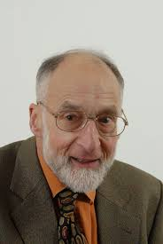

 Robin Milner |
Education: Bachelors degree in mathematics, University of Cambridge, King's College, Eton CollegeLifespan: January 13, 1934-March 20, 2010 Quote: "There are many ways of trying to understand programs. People often rely too much on one way, which is called `debugging' and consists of running a partly-understood program to see if it does what you expected. Another way, which ML advocates, is to install some means of understanding in the very programs themselves." |
|---|